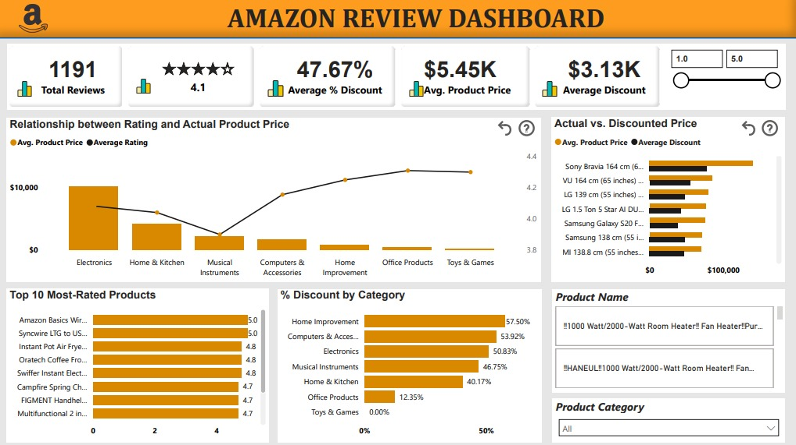

In this project, I analyzed a company's supply chain with the aim of uncovering key insights that drive better financial decision-making. Using DAX measures for calculations and Power BI for data extraction and visualization, I created two dashboards. See details below.
Revenue Insights Dashboard - Shows revenue trends, customer behavior, and pricing impact.
Logistics & Transportation Insights Dashboard - Highlights supplier performance, lead times, and cost efficiency to improve supply chain operations.
For this project, I explored digital marketing performance using Power BI and DAX to analyze key metrics like ad spend, conversion rates, and customer engagement.
The dashboard tells a clear story of how different marketing channels perform, where the budget is most effective, and trends that drive the best ROI.
This helped identify insights to optimize marketing strategies and boost overall campaign success.
In this exciting project, I used SQL to explore employee records for a start-up company, answering key questions about staff strength, department sizes, and employee tenure.
By cleaning and analyzing the data, I identified the longest-serving and newest employees, salary trends, and hiring patterns, providing useful insights for workforce planning.

This project centres around analyzing customer reviews to understand the factors that influence their purchasing decisions.
Using Power BI, I analyzed the relationship between product prices and customer ratings, evaluated discount patterns across product categories, and identified trends in sales performance.
These insights will help the business channel the right efforts towards market strategy, pricing and improving customer retention.
This project explores global debt trends and highlights how debt levels vary across 198 countries, from advanced economies to emerging markets and low-income regions between 1950 and 2022.
Using Power BI, Power Query and DAX, I analyzed debt distribution, identified key patterns, and generated insights that can guide economic decisions.